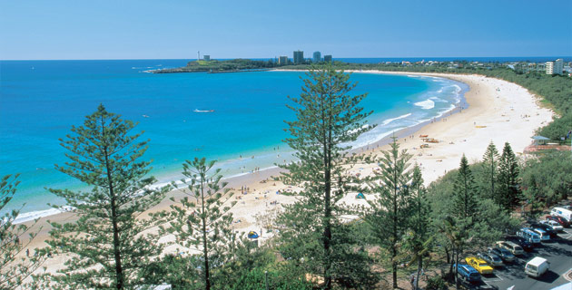

The Australian and New Zealand Association of Mathematical Physics (ANZAMP) is a special interest group of AustMS.
News
| Inna Lukyanenko is the winner of the second A. J. Guttmann Prize, for her seminar entitled Properties of the Bethe Ansatz equations for Richardson-Gaudin models! |
| Talks are available for download on the abstracts page. |
Announcement
The Centre for Mathematical Physics at The University of Queensland and sponsors would like to invite you to the ANZAMP 2nd Annual Meeting to be held at Mantra, in Mooloolaba on the Sunshine Coast from the 27th until the 29th of November 2013.

Organising Committee: Nathan Clisby |
Program Committee: Yao-Zhong Zhang (Chair, The University of Queensland) |
Administrative Officer: Ms Kerry Hill, |
Program
A Welcoming Reception will be held on Tuesday, November 26, commencing at 5 pm. Attendance is free for registered participants. Additional tickets can be purchased for guests.
The meeting will conclude at lunchtime on Friday, November 29.
Keynote Speakers:
Peter Forrester - The University of Melbourne, Australia
Vladimir B. Matveev - Universite de Bourgogne, France
John Roberts - The University of New South Wales, Australia
Robert Thompson - The University of Otago, New Zealand
Participants include:
Angela Foerster - UFRGS, Brazil
Yong-Chang Huang - Beijing University of Technology, China
Ernie Kalnins - The University of Waikato, New Zealand
Ernesto Nungeser - Trinity College Dublin, Ireland
Vladimir Rittenberg - The University of Bonn, Germany
New Zealand student travel funding
New Zealand students are eligible to apply for travel funding through the New Zealand Mathematical Society.
Registration
Registration details and payment are to be completed through this link.
Abstract submission
Online submission of abstracts is now open through this link.
Accommodation
Discounted accommodation at Mantra is available for conference delegates. Bookings must be made using this form.
CLARIFICATION: Although the booking form states PLEASE NOTE THE CREDIT CARD HOLDER MUST BE PRESENT UPON CHECK-IN, university corporate credit cards will be accepted for making bookings.
Please be aware that all bookings must be received at least 14 days prior to the event to receive this special discounted accommodation rate.
Flights to the Sunshine Coast
The nearest airport is the Sunshine Coast Airport.
Directions
Mantra is about 20 minutes drive from the Sunshine coast airport. Taxis are available at the airport.
Public transport options
Alternatively, one can take the bus line 622 from the airport,
and then change at Sunshine Plaza for the bus line 600, until Mooloolaba.
For further information on the travel one can use TransLink.
A. J. Guttmann Prize
This prize ($500) is awarded for the most outstanding talk by a student or recent graduate (PhD completed in the calendar year of the meeting) presented at each ANZAMP meeting.
The prize is named in honour of Professor Anthony J. Guttmann, who has been, and continues to be, a leading figure in the mathematical physics community in Australia.
Among many distinctions, Tony Guttmann has a distinguished research record in statistical mechanics, was President of the Australian Mathematical Society and
was one of the leading figures in the establishment of the Australian Mathematical Sciences Institute. Tony is renowned for the guidance
and wisdom he offers to his colleagues and students, and he is a tireless advocate of programs for talented students in mathematical physics,
and mathematics more generally.